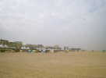
Berck, 10 jours de cerf-volant sur une somptueuse plage... Et une Excellente organisation ! Il y en a pour tout le monde : les pilotables, les monofils, les gros gonflables, les tractionnistes, sans oublier les Jardins du Vent ! Bien sûr, il faut aussi trouver les sous, et il y a maintenant des barnums d'un bout à l'autre de la Promenade, et même plus loin à gauche que l'Entonnoir...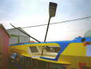
Tout au bout à droite, un volontaire pour la course de la traversée de l'Atlantique à la rame cherche des sponsors, lui aussi...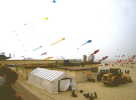
Les Awitas sont là, avec entre autres leurs trains de deltas ! et bien d'autres, avec des raies, des lézards et des poissons divers...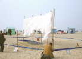
Aux Jardins, Patrick et Annick ont remonté leurs amusantes pomponnettes bleues et leur grand filet en forme de peau d'ours (blanc...) !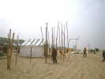
Didier Ferment est venu, et Bruno Tondellier a monté les instruments de leurs ensembles éoliens : fils vibrants, rubans, flûtes, etc !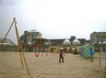
Didier (que l'on voit à droite) a aussi monté, avec les grands bambous qu'il aime, cet ensemble de cercles rouges qu'il assemblera selon différentes structures !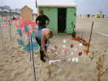
Les Ghesquière et en particulier Patricia ont planté leurs moulinets surtout à base de cuillers et autres accessoires pittoresques astucieusement assemblés ! Bernard l'aidera à la plantation, mais il roule beaucoup en char et fera aussi du monofil l'après-midi avec ses créations comme ses "Rois des Airs".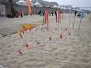
Des petits moulinets en cuillers, mais aussi des bouteilles colorées découpées...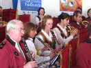
Pot d'inauguration, avec Marseillaise, discours et buffet apéritif généreux ! Deux orchestres alterneront pour que la musique soit continue, un local, et celui-ci d'origine polonaise.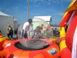
Sur la promenade, ils ont enfermé, affreux supplice, une jeune femme dans une bulle transparente qu'ils finissent de gonfler !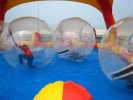
C'est simple : on pousse les bulles sur un bassin et les victimes consentantes essaient de rester debout, ou de courir pour se déplacer, voire se jettent sur le dos !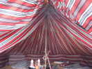
Il n'y a pas de vent pour les gros gonflables, mais l'équipe de Peter Lynn a monté sa pittoresque tente au bord de la surface dédiée !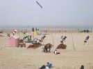
Dans la surface de démonstration, bien sûr, que des pilotables, deux ou quatre lignes !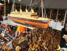
Dans les barnums que je verrai souvent au gré des allers-retours entre les surfaces et la tente VIP (où l'on déjeune), ce marchand d'objets en bois présente ce très beau Titanic !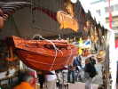
Il a aussi cette belle jonque sculptée, dans un bois coloré genre acajou, somptueux !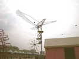
Joël Goupil s'est renouvelé, créant deux oiseaux voisins dont vous avez pu voir l'un à Trouville, voici l'autre, un peu plus grand à première vue, mais qui bat aussi des ailes !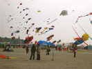
Côté gonflables, ça commence à être bien meublé, mais on dirait que l'ensemble du terrain du fond est en train de lever comme une miche de pain (bleue) ! Eh bien, c'est la dernière création de Peter Lynn, une raie de 150 m de long et... 75 m d'envergure !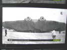
J'étais trop loin pour préciser, il y avait peu de vent, je pensais qu'ils gonfleraient juste un peu au sol pour essayer et donner une idée, et voilà ce que ça donnait à la Télé, impressionnant, non ?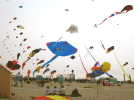
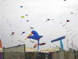
Ouille, de loin, je vois une aile qui remonte et rejoint l'autre façon papillon ! Je ne saurai pas ce qui a lâché, une ficelle, un ancrage. Ca n'a pas revolé cet après-midi là, en tout cas !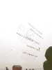
De loin, j'ai vu aussi de belles présentations, pas toutes dans l'aire de démo, comme cet ensemble de trains de deltas avec d'immenses rubans ! Six trains de 12 avec les rubans, ça meuble !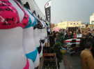
Sur la promenade, des marchands de tout, de planches, de Rollers, de cerfs-volants à petits prix que même nous, on n'arrive pas à les faire voler mais que les débutants viennent nous apporter au noyau CVCF avec un peu d'espoir dans les yeux !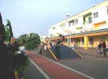
Tout au bout, un parc avec rampes et tremplins pour des vélos et des rollers s'offre aux acrobaties impressionnantes...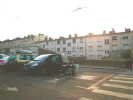
Il y a la mer, les dunes, les grands espaces mais cette petite famille a trouvé ce lieu très poétique pour la pause restauration.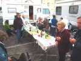
Sur le parking des campings-cars "cervolistes", 4 d'entre eux ont formé un carré, un patio où on peut se réunir tranquillement ! Ce soir, c'est pizza -partie, après un petit apéritif où chacun apporte ses contributions... Michel, à droite, CVCF 18, je crois, est invité bien qu'il ne dorme pas dans son véhicule (un scooter 50 cm3 qui l'emmène à tous les festivals !).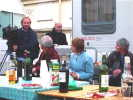
Je publie les photos, car, contrairement à certains avis, notre réunion ne manque pas d'intérêt, puisque même la Télévision est présente !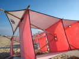
Daniel a, comme tous les ans, monté ses Saconneys bambou-coton qui resteront exposés toute la semaine au sol, comme les autres années, en attendant un Force 4 absentéiste encore en 2011 ! Comme ça, il a le temps de parler...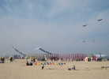
Derrière l'aire de démo, deux cerfs-volants portent des banderoles géantes dont le texte changera tous les jours, genre "Merci Berck", 'En RTT" ou même "Gérard Dieu" (>>>>>).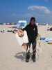
On retrouve avec plaisir Fabrice, qui a déménagé plus au sud et qu'on ne voit plus beaucoup sur les festivals. Il s'est mis à la construction de très beaux monofils bambou-papier qu'il fait voler régulièrement.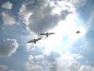
Je me suis installé avec le noyau CVCF dans une aire au-delà des Jardins du Vent. Aujourd'hui, je me suis attelé à faire voler mes deux grues ensemble (mai pas en train), sur la même retenue et reliées par des ficelles censées les tenir écartées ! Ca a marché quelques secondes, le temps de prendre une photo, mais ensuite, l'agitation a tout emmêlé, bouh !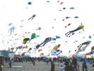
Pourtant, le vent est très bien, et il y a du monde en l'air ! Pas comme à Fanö où ça se déroule sur 10 km, mais presque !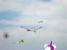
En désespoir de cause, j'attache les 2 grues ensemble et ça vole ! J'améliorerai encore un peu, car là, j'ai attaché où j'ai pu et elles sont un peu déformées !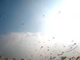
Mes grues volent assez pour les monter à une centaine de mètres, mais là, une rafale retourne une aile, elles ne tombent pas, mais je les ai ramenées à grande vitesse à ras du sol !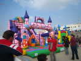
Sur la plage, un jardin du vent spécial pour les enfants avec des trampolines et un château très Disneyland. Ils en sont fous !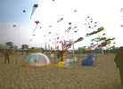
En bordure des Jardins, Gérard Rosenblatt a monté son éventail de créations plastiques en plastique : son igloo gonflé par le vent, ses chiens, ses belles méduses et son dernier-né, un éléphanteau !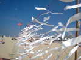
Les filets commencent à s'habiller des milliers de voeux formulés !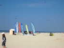
Voilà le noyau CVCF, avec ses tentes, ses bannières des antennes IdF et Alsace, et des cerfs-volants encore dans les sacs ! Gérard nous a accordé un cabanon qui évite bien des voyages dans le sable fin en traînant des chariots, ça m'épuise de plus en plus !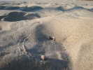
Ma tente (surtout le jaune) attire des petites bêtes noires et des coccinelles qui viennent sans doute les consommer ! J'en ai compté 11 par terre quand je l'ai secouée le soir ! Celle-ci semble devenue collante et a du mal à progresser... Une autre est comme une tortue : sur le dos, elle n'arrive pas à se retourner, dans le sable... Il a fallu que je lui donne un coup de main...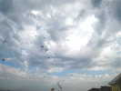
Plus trop de monde en vol, c'est l'heure que choisit Michel pour lancer son Météo, le point noir en haut à gauche de la photo !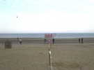
Le vent a un peu forci, ou le team en a assez de ne rien faire, il dresse UN Saconney pour l'envol...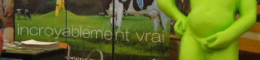
Passage dans les barnums, quelques expos, comme ce stand... de la Belgique, vous aviez deviné !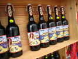
Plus loin, pour les obsédés, des bières attirantes à collectionner !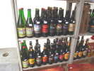
Et une autre collection, nordiste, celle-là !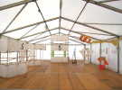
Christian Kolz a exposé ses cerfs-volants à l'ancienne, de construction rigoureuse !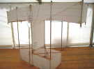
Celui-ci a une grande envergure pour une aile si mince, mais la rigidité en souffre un peu, au moins au sol.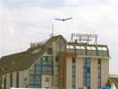
Aujourd'hui, j'ai fait voler mon Oiseau Bleu, pas grand comme le dit l'enseigne, mais je l'aime bien !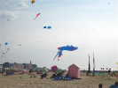
La vaste raie revole, ombrageant les terrains, mais qu'est-ce demain nous apportera de Nouvelle-Zélande ?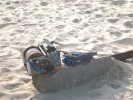
Cet aérophotographe, las de rembobiner sa ficelle, a conçu ce treuil à base de moteur d'essuie-glace. Il faut quand même tirer la ligne à la main, le treuil ne fait que rembobiner, et c'est aussi bien !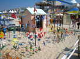
Côté jardins, Jean-Claude Anquier a bien sûr planté ses innombrables et variés moulinets à base de bouteilles découpées ! Et son Audimat ne baisse pas avec les années !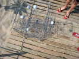
Joël Goupil a disposé encore ses chemins de billes avec leurs aiguillages et leurs chemins variés, en plus de ses oiseaux vus plus haut.